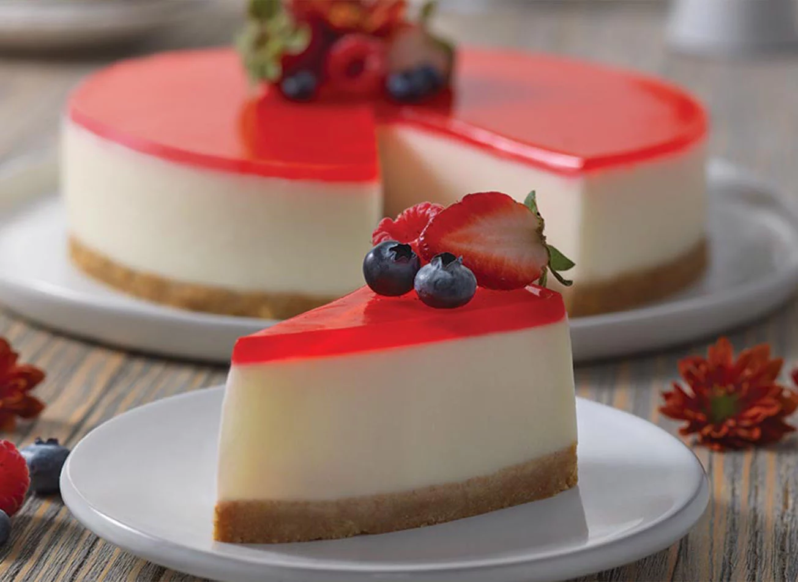
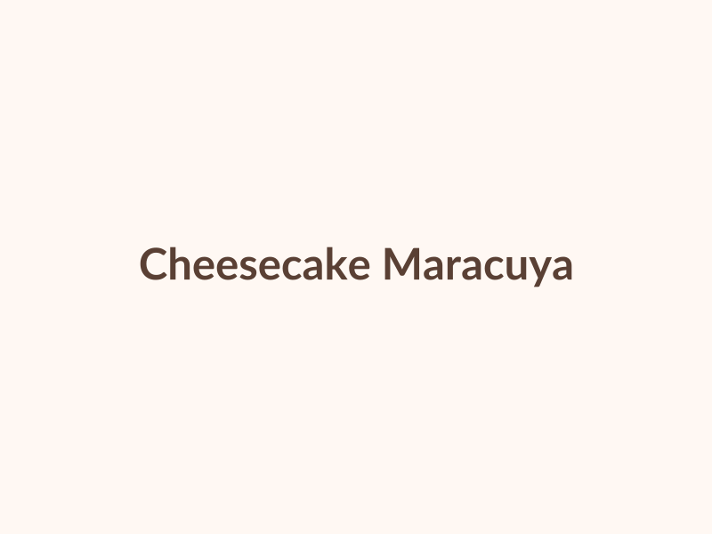
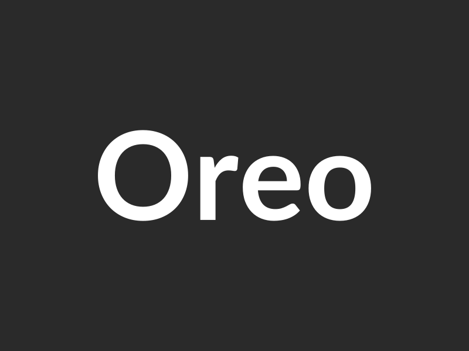

Especialistas en cheesecakes fríos de gelatina. Creados diariamente con ingredientes frescos, pasión y el cariño de nuestra familia.

Suave gelatina artesanal de frambuesa y arándanos sobre cremosa mousse de queso.

Brillante cobertura de gelatina de maracuyá natural sobre una crujiente base de galleta.

Capas intercaladas de crema ligera de queso y galleta Oreo molida con topping de chocolate.
Tre Sorelle nace del amor por la repostería hecha en casa con calidad profesional. Inspirado en tres personalidades únicas —representadas sutilmente en nuestro logo por el girasol, la margarita y la rosa—, cada postre está pensado para acompañar momentos especiales.
Nuestra especialidad son los cheesecakes fríos elaborados con gelatina natural, ofreciendo una textura suave, refrescante y con la dulzura justa.